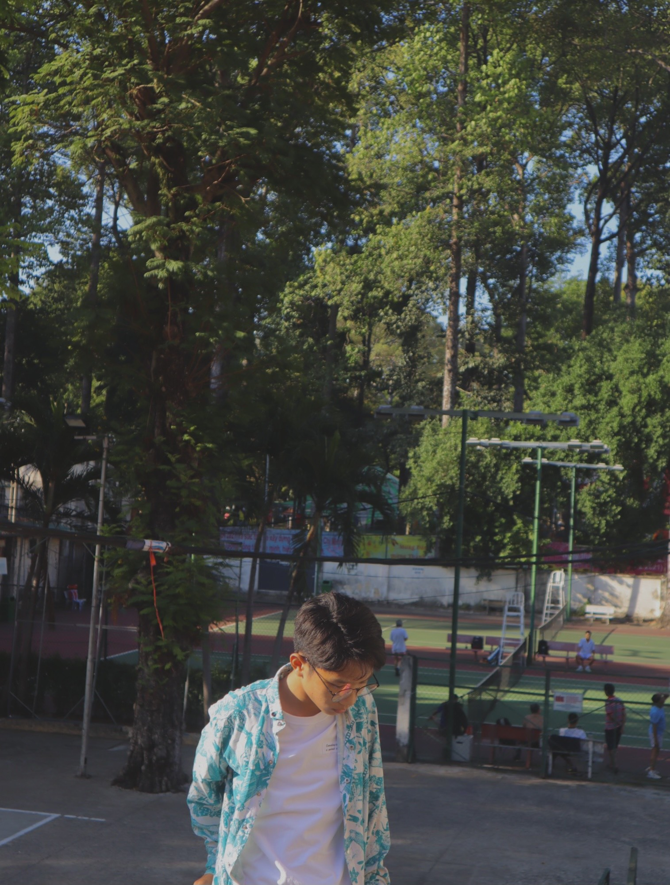
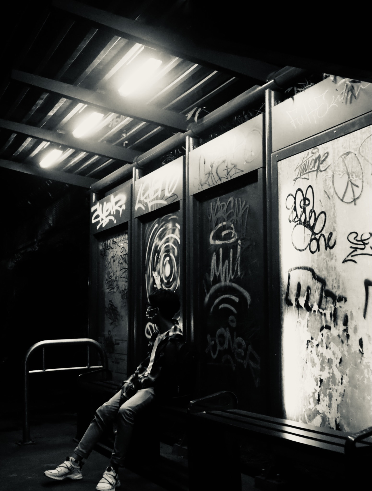

Minh Nhật
Thông Tin Cá Nhân
- Name: Lê Minh Nhật
- MSSV: 2174802015020
- Date: 21 - 10 - 2003
- Address: Cu Chi District, HCM City
Hình Ảnh


Vị Trí - Nghề Nghiệp Tương Lai
Dự định của em là trở thành một Website Developer và định hướng của em là làm về Frontend Phần front-end của một trang web là phần tương tác với người dùng. Tất cả mọi thứ bạn nhìn thấy khi điều hướng trên Internet, từ các font chữ, màu sắc cho tới các menu xổ xuống và các thanh trượt, là một sự kết hợp của HTML, CSS, và JavaScript được điều khiển bởi trình duyệt máy tính của mình.
Tuấn Tường
Thông Tin Cá Nhân
- Name: Trần Tuấn Tường
- MSSV: 2174802015018
- Date: 21 - 10 - 2003
- Address: Cu Chi District, HCM City
Hình Ảnh
Vị Trí - Nghề Nghiệp Tương Lai
Dự định của em là trở thành một Website Developer và định hướng của em là làm về Frontend Phần front-end của một trang web là phần tương tác với người dùng. Tất cả mọi thứ bạn nhìn thấy khi điều hướng trên Internet, từ các font chữ, màu sắc cho tới các menu xổ xuống và các thanh trượt, là một sự kết hợp của HTML, CSS, và JavaScript được điều khiển bởi trình duyệt máy tính của mình.